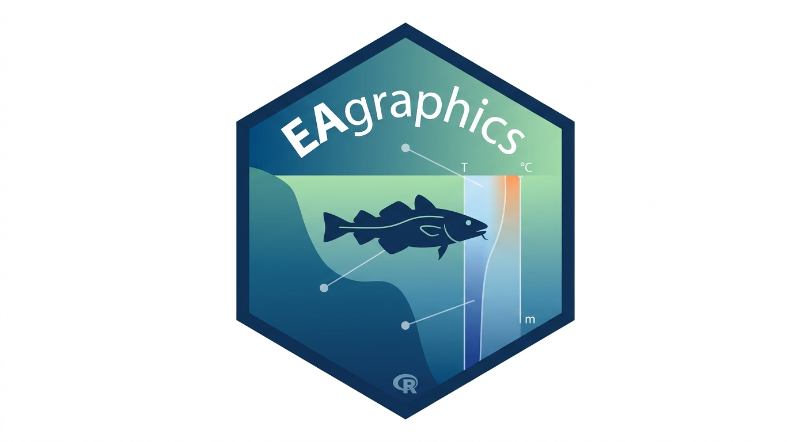

Plot Generic Anomaly with Standardized Scorecard
plot_anomaly.RdCreates a publication-quality anomaly plot with a standardized color scorecard. Handles extreme values via clamping and allows for customizable X-axis labeling intervals.
Usage
plot_anomaly(
data,
value_col,
var_col = NULL,
composite_data = NULL,
comp_value_col = NULL,
show_composite = TRUE,
show_scorecard = TRUE,
year_range = NULL,
x_breaks_interval = 1,
colors = NULL,
lang = "en",
y_label = NULL,
y_breaks = ggplot2::waiver(),
base_size = 11
)Arguments
- data
Data frame containing
yearand the anomaly values.- value_col
Unquoted name of the anomaly column for the bars.
- var_col
Optional unquoted name of the grouping column for stacked bars.
- composite_data
Optional data frame for the line and scorecard.
- comp_value_col
Unquoted name of the column for the line/scorecard.
- show_composite
Logical. Should the composite line be drawn?
- show_scorecard
Logical. Should the heatmap scorecard be drawn?
- year_range
Numeric vector
c(start, end).- x_breaks_interval
Numeric. Interval for year labels (e.g., 2 for every other year). Defaults to 1.
- colors
Optional named vector for bar colors.
- lang
Language:
"en"(default) or"fr".- y_label
Optional string for the y-axis title.
- y_breaks
Optional numeric vector for y-axis tick marks.
- base_size
Numeric. Base font size for scaling text. Defaults to 11.
Examples
if (FALSE) { # \dontrun{
# Example 1: Standard SST Anomaly for EAR 5 (Southern Gulf)
sst_anom <- EA.data |>
dplyr::filter(variable == "sst.month10", EAR == 5) |>
calc_anomaly(baseline_range = c(1991, 2020))
plot_anomaly(sst_anom, value_col = anomaly, comp_value_col = anomaly,
y_label = "SST Anomaly (°C)")
# Example 2: Simple bar-only look (e.g., for biological indices)
calanus_anom <- EA.data |>
dplyr::filter(variable == "calanus.finmarchicus.annual", EAR == 5) |>
calc_anomaly(baseline_range = c(1999, 2015))
plot_anomaly(data = calanus_anom,
value_col = anomaly,
show_scorecard = FALSE,
show_composite = FALSE,
y_label = "Standardized Anomaly")
} # }